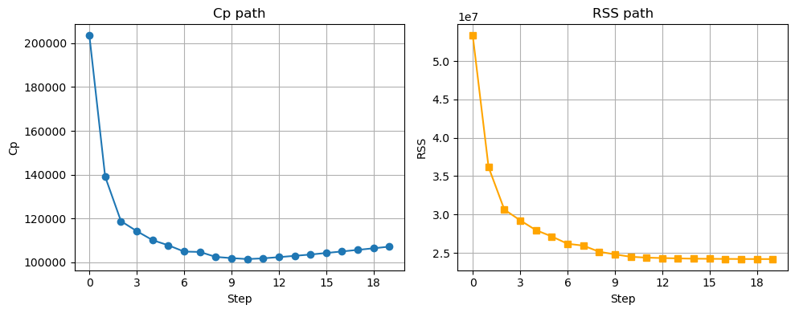
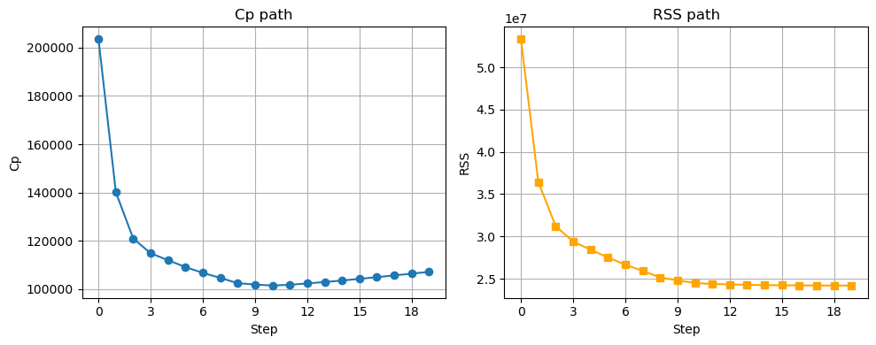
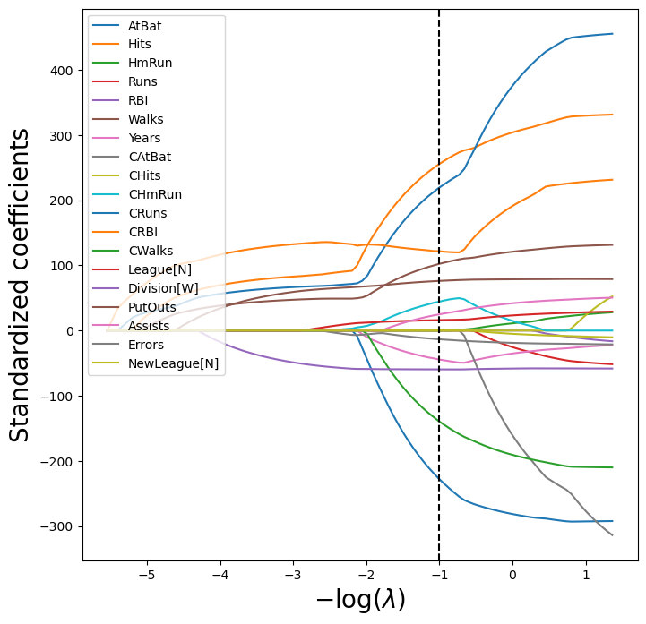
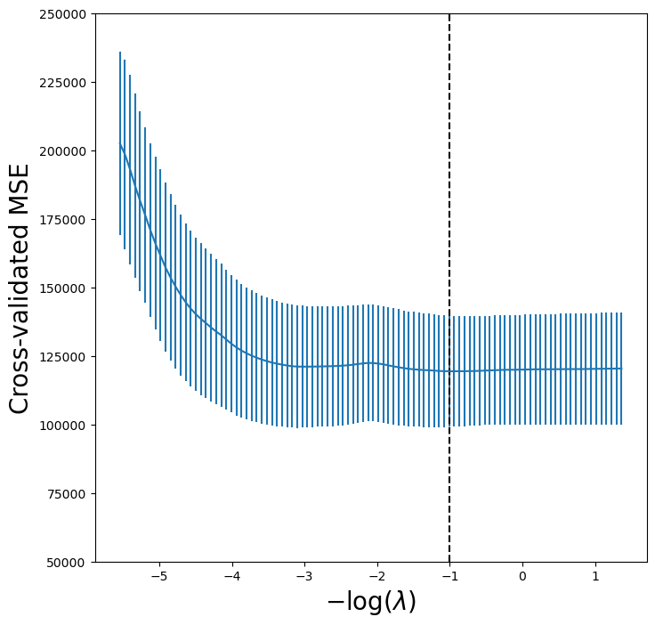
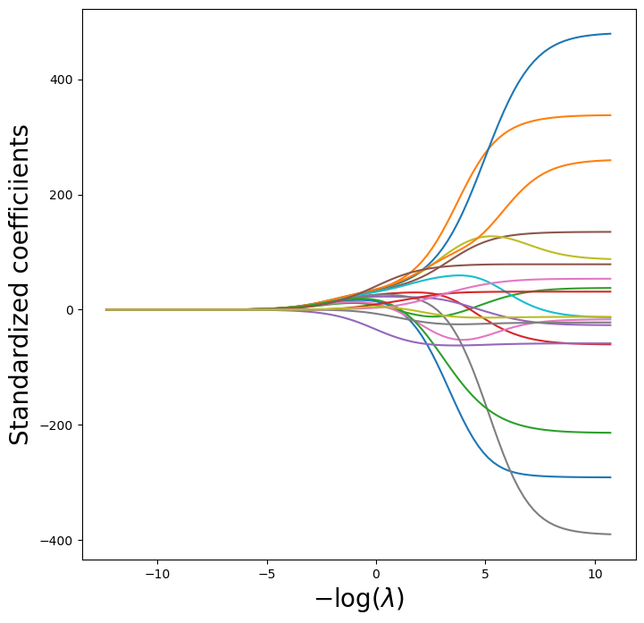
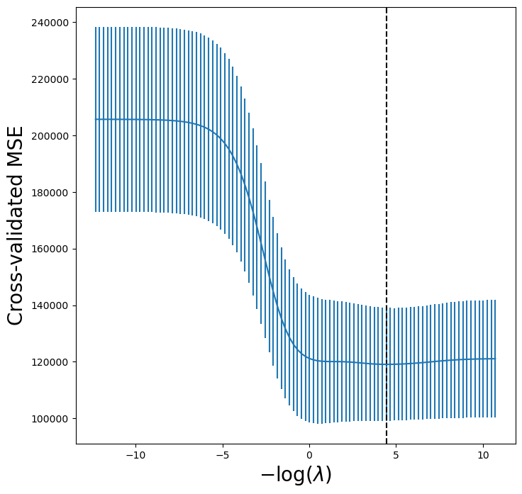

import numpy as np
import pandas as pd
import matplotlib.pyplot as plt
from matplotlib.pyplot import subplots
from statsmodels.api import OLS
import sklearn.linear_model as skl
from sklearn.preprocessing import StandardScaler
from ISLP import load_data
from ISLP.models import ModelSpec as MS
from sklearn.pipeline import Pipeline
from matplotlib.ticker import MaxNLocator
import warnings
warnings.simplefilter("ignore")Lecture 5b - Variable Selection
Subset selection methods
Adapted from Introduction to Statistical Learning with Python (link)
Here we implement methods that reduce the number of parameters in a model by restricting the model to a subset of the input variables.
Forward Selection
We will apply the forward-selection approach to the Hitters data. We wish to predict a baseball player’s Salary on the basis of various statistics associated with performance in the previous year.
Hitters = load_data('Hitters')
Hitters = Hitters.dropna(); # remove rows with one or more missing values
Hitters.shape(263, 20)X = MS(Hitters.columns.drop('Salary')).fit_transform(Hitters)
Y = np.array(Hitters['Salary'])
sigma2 = OLS(Y,X).fit().scaledef Cp(sigma2, estimator, X, Y):
"Cp statistic"
n, p = X.shape
Yhat = estimator.predict(X)
RSS = np.sum((Y - Yhat)**2)
return (RSS + 2 * p * sigma2) / n def RSS(estimator, X, Y):
Yhat = estimator.predict(X)
RSS = np.sum((Y - Yhat)**2)
return RSS# Forward stepwise
n = len(Y)
predictors = X.columns.drop('intercept')
selected = ['intercept']
remaining = predictors.copy()
variable_path = []
cp_path = []
rss_path = []
# include intercept-only model
X_current = X[selected]
fit0 = OLS(Y, X_current).fit()
cp0 = Cp(sigma2, fit0, X_current, Y)
rss0 = RSS(fit0, X_current, Y)
variable_path.append({"predictors": selected.copy()})
cp_path.append(cp0)
rss_path.append(rss0)
# build up models
for j in range(len(predictors)):
best = None
for cand in remaining:
trial = selected + [cand]
fit = OLS(Y, X[trial]).fit()
cp = Cp(sigma2, fit, X[trial], Y)
rss = RSS(fit, X[trial], Y)
if (best is None) or (cp < best["cp"]):
best = {"cand": cand, "cp": cp, "rss": rss}
selected.append(best["cand"])
remaining = remaining.drop(best["cand"])
p = len(selected)
variable_path.append({"predictors": selected.copy()})
cp_path.append(best['cp'])
rss_path.append(best['rss'])np.argmin(cp_path)np.int64(10)variable_path[np.argmin(cp_path)]{'predictors': ['intercept',
'CRBI',
'Hits',
'PutOuts',
'Division[W]',
'AtBat',
'Walks',
'CWalks',
'CRuns',
'CAtBat',
'Assists']}fig, axs = plt.subplots(1, 2, figsize=(10, 4))
# Cp on left
axs[0].plot(cp_path, marker='o')
axs[0].set_xlabel('Step')
axs[0].set_ylabel('Cp')
axs[0].set_title('Cp path')
axs[0].grid(True)
axs[0].xaxis.set_major_locator(MaxNLocator(integer=True))
# RSS on right
axs[1].plot(rss_path, marker='s', color='orange')
axs[1].set_xlabel('Step')
axs[1].set_ylabel('RSS')
axs[1].set_title('RSS path')
axs[1].grid(True)
axs[1].xaxis.set_major_locator(MaxNLocator(integer=True))
plt.tight_layout()
plt.show()
Backward stepwise
n = len(Y)
predictors = X.columns.drop('intercept')
selected = predictors.copy()
variable_path = []
cp_path = []
rss_path = []
fit = OLS(Y, X).fit()
cp = Cp(sigma2, fit, X, Y)
rss = RSS(fit, X, Y)
variable_path.append({"predictors": selected.copy()})
cp_path.append(cp)
rss_path.append(rss)
for j in range(len(predictors)):
best = None
for cand in selected:
trial = [p for p in selected if p != cand]
trial_all = ['intercept'] + trial
fit = OLS(Y, X[trial_all]).fit()
cp = Cp(sigma2, fit, X[trial_all], Y)
rss = RSS(fit, X[trial_all], Y)
if (best is None) or (cp < best["cp"]):
best = {"rm": cand, "cp": cp, "rss": rss, "trial": trial}
selected = best['trial']
variable_path.append({"predictors": selected.copy()})
cp_path.append(best['cp'])
rss_path.append(best['rss'])variable_path[np.argmin(cp_path)]fig, axs = plt.subplots(1, 2, figsize=(10, 4))
# Cp on left
axs[0].plot(np.arange(0, p)[::-1], cp_path, marker='o')
axs[0].set_xlabel('Step')
axs[0].set_ylabel('Cp')
axs[0].set_title('Cp path')
axs[0].grid(True)
axs[0].xaxis.set_major_locator(MaxNLocator(integer=True))
# RSS on right
axs[1].plot(np.arange(0, p)[::-1],rss_path, marker='s', color='orange')
axs[1].set_xlabel('Step')
axs[1].set_ylabel('RSS')
axs[1].set_title('RSS path')
axs[1].grid(True)
axs[1].xaxis.set_major_locator(MaxNLocator(integer=True))
plt.tight_layout()
plt.show()
We get the same answer, whether we do forward or backward stepwise!
The Lasso
We now fit the Lasso. We use K-fold cross-validation to select the regularization parameter, \lambda.
K=5
scaler = StandardScaler(with_mean=True, with_std=True)dat = MS(Hitters.columns.drop('Salary')).fit_transform(Hitters)
dat = dat.drop('intercept', axis=1) # remove intercept - it is added automatically
X = np.asarray(dat)We use Pipeline to pipe together the standardization step and the lassoCV step.
lassoCV = skl.ElasticNetCV(alphas=100, # search over 100 different values of lambda
l1_ratio=1,
cv=K)
pipeCV = Pipeline(steps=[('scaler', scaler),
('lasso', lassoCV)])
pipeCV.fit(X, Y)
tuned_lasso = pipeCV.named_steps['lasso']lassoCV runs cross-validation for the following candidate \lambda values (determined automatically):
tuned_lasso.alphas_array([255.28209651, 238.0769376 , 222.03134882, 207.06717903,
193.11154419, 180.09647243, 167.95857295, 156.63872727,
146.08180131, 136.23637682, 127.05450099, 118.49145286,
110.50552551, 103.05782294, 96.1120706 , 89.63443871,
83.59337754, 77.95946367, 72.70525674, 67.80516577,
63.23532454, 58.9734753 , 54.99886045, 51.29212133,
47.83520402, 44.61127137, 41.60462098, 38.80060878,
36.18557761, 33.74679078, 31.47237003, 29.35123763,
27.37306245, 25.52820965, 23.80769376, 22.20313488,
20.7067179 , 19.31115442, 18.00964724, 16.7958573 ,
15.66387273, 14.60818013, 13.62363768, 12.7054501 ,
11.84914529, 11.05055255, 10.30578229, 9.61120706,
8.96344387, 8.35933775, 7.79594637, 7.27052567,
6.78051658, 6.32353245, 5.89734753, 5.49988604,
5.12921213, 4.7835204 , 4.46112714, 4.1604621 ,
3.88006088, 3.61855776, 3.37467908, 3.147237 ,
2.93512376, 2.73730624, 2.55282097, 2.38076938,
2.22031349, 2.07067179, 1.93111544, 1.80096472,
1.67958573, 1.56638727, 1.46081801, 1.36236377,
1.27054501, 1.18491453, 1.10505526, 1.03057823,
0.96112071, 0.89634439, 0.83593378, 0.77959464,
0.72705257, 0.67805166, 0.63235325, 0.58973475,
0.5499886 , 0.51292121, 0.47835204, 0.44611271,
0.41604621, 0.38800609, 0.36185578, 0.33746791,
0.3147237 , 0.29351238, 0.27373062, 0.2552821 ])The \lambda with lowest CV error is:
tuned_lasso.alpha_np.float64(2.737306244504529)The corresponding coefficients are:
tuned_lasso.coef_array([-226.83004696, 254.82706494, 0. , -0. ,
0. , 102.14493902, -44.59414305, -0. ,
0. , 43.36295623, 218.02899432, 123.42086296,
-138.61718612, 16.04104388, -59.54521107, 76.10379606,
24.74415012, -13.25252655, -0. ])LassoCV doesn’t store all the coefficients for each \lambda candidate. To visualize the Lasso paths, let’s obtain these coefficients for every \lambda:
scale = pipeCV.named_steps['scaler']
Xs = scale.transform(X)lambdas, soln_array = skl.Lasso.path(Xs,
Y,
l1_ratio=1,
n_alphas=100)[:2]
soln_path = pd.DataFrame(soln_array.T,
columns=dat.columns,
index=-np.log(lambdas))path_fig, ax = subplots(figsize=(8,8))
soln_path.plot(ax=ax, legend=False)
ax.legend(loc='upper left')
ax.set_xlabel('$-\\log(\\lambda)$', fontsize=20)
ax.set_ylabel('Standardized coefficients', fontsize=20);
ax.axvline(-np.log(tuned_lasso.alpha_), c='k', ls='--')
lassoCV_fig, ax = subplots(figsize=(8,8))
ax.errorbar(-np.log(tuned_lasso.alphas_),
tuned_lasso.mse_path_.mean(1),
yerr=tuned_lasso.mse_path_.std(1) / np.sqrt(K))
ax.axvline(-np.log(tuned_lasso.alpha_), c='k', ls='--')
ax.set_ylim([50000,250000])
ax.set_xlabel('$-\\log(\\lambda)$', fontsize=20)
ax.set_ylabel('Cross-validated MSE', fontsize=20);
We can compare to ridge regression:
lambdas = 10**np.linspace(8, -2, 100) / Y.std()
ridgeCV = skl.ElasticNetCV(alphas=lambdas, # need to provide for ridge
l1_ratio=0, # l1_ratio=0 for ridge!
cv=K)
pipeCV = Pipeline(steps=[('scaler', scaler),
('ridge', ridgeCV)])
pipeCV.fit(X, Y)
tuned_ridge = pipeCV.named_steps['ridge']tuned_ridge.coef_array([-222.80877051, 238.77246614, 3.21103754, -2.93050845,
3.64888723, 108.90953869, -50.81896152, -105.15731984,
122.00714801, 57.1859509 , 210.35170348, 118.05683748,
-150.21959435, 30.36634231, -61.62459095, 77.73832472,
40.07350744, -25.02151514, -13.68429544])We can see the coefficients are not exactly zero.
lambdas, soln_array = skl.ElasticNet.path(Xs, Y, l1_ratio=0, alphas=lambdas)[:2]
soln_path = pd.DataFrame(soln_array.T,columns=dat.columns, index=-np.log(lambdas))
path_fig, ax = subplots(figsize=(8,8))
soln_path.plot(ax=ax, legend=False)
ax.set_xlabel('$-\\log(\\lambda)$', fontsize=20)
ax.set_ylabel('Standardized coefficiients', fontsize=20);
tuned_ridge = pipeCV.named_steps['ridge']
ridgeCV_fig, ax = subplots(figsize=(8,8))
ax.errorbar(-np.log(lambdas),
tuned_ridge.mse_path_.mean(1),
yerr=tuned_ridge.mse_path_.std(1) / np.sqrt(K))
ax.axvline(-np.log(tuned_ridge.alpha_), c='k', ls='--')
ax.set_xlabel('$-\\log(\\lambda)$', fontsize=20)
ax.set_ylabel('Cross-validated MSE', fontsize=20);